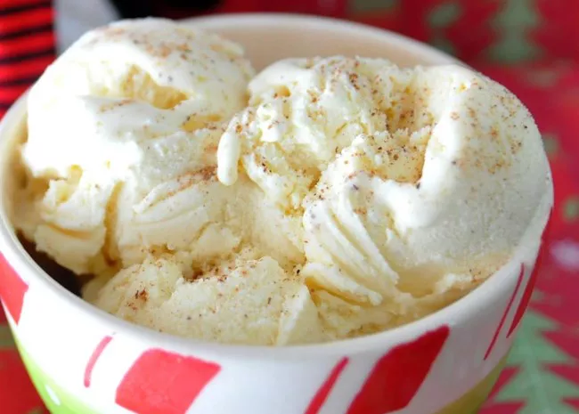

icecream

Ingredients
- 2 cups eggnog
- 2 cups heavy cream
- 1 (10 ounce) can sweetened condensed milk
- 1 teaspoon vanilla extract, or to taste
- Step 1
Mix eggnog, heavy cream, condensed milk, and vanilla in a large bowl. Pour the mixture into an ice cream maker and freeze according to manufacturer's directions until it reaches "soft-serve" consistency.
- Step 2
Transfer ice cream into a one- or two-quart lidded plastic container; cover surface with plastic wrap and seal. For best results, ice cream should ripen in the freezer for at least 2 hours or overnight.
Home